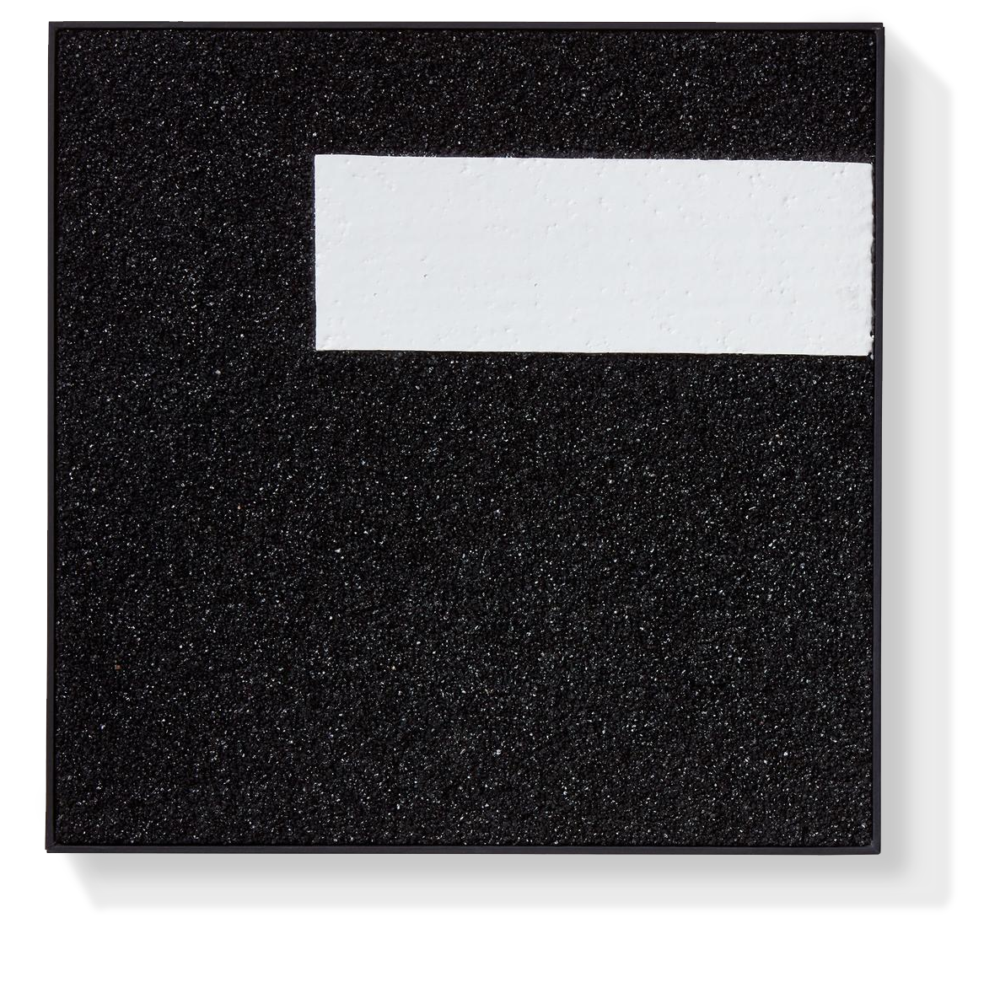

We found the common theme-the Road in Han Han’s film trilogy. Moreover, for readers who have been reading his characters for a long time, they will also have a very deep understanding of the years they have been accompanied and have gone by together. A real road, an emotion that could not be more vivid, often arouse the strong resonance of audience and reader when it recurs. Therefore, the restoration of “highway” has become the core objective of this design. Through repeated testing of the materials, we obtained a stretch of highway that could mix the false with the genuine, and achieved mass production smoothly. Touching the road and contacting its surface, the rough grains immediately bring people back to Han Han’s films and characters.